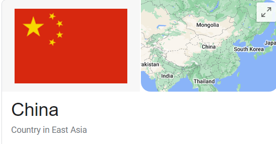

Back
In which country is loudly slurping your noodles not considered a compliment?
Answer: Korea
Culture Fact #44. In China and Japan, loudly slurping your noodles is considered a compliment to the cook for your one-bowl meal.
